第三章
导入¶
Words are composed of bits
-
RISC V 一般以32位为一个word（实验时同理），后面还可能出现64位一个word
-
也就是包含了四个字节或者八个字节
Generic Implementation
- program counter(PC)来提供指令地址
- 从地址得到指令
- 读reg
- 执行指令
有符号和无符号数的表示¶
表示和数逻相同
Number type¶
无符号整数：可以用来表示地址、只能是正数的数
有符号数：正数、负数（掌握二进制补码表示方法）
浮点数：运算和正数不同，有不同的精度Single precision，double precision，Quadruple precision
Arithmetic¶
加法和减法¶
加法¶
- 一位一位相加
减法¶
- 直接相减
- 补码相加，可能会有overflow
overflow处理¶
- ALU硬件检测出有overflow
- 保存 instruction address 在特殊的寄存器EPC里
- 跳转到操作系统特定的程序来矫正或者回到程序/返回错误码/退出程序
逻辑运算¶
简单ALU¶
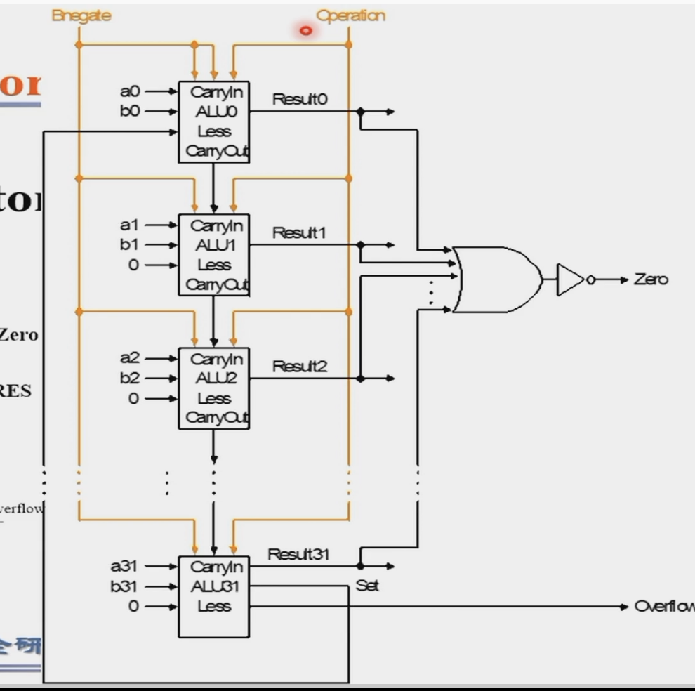
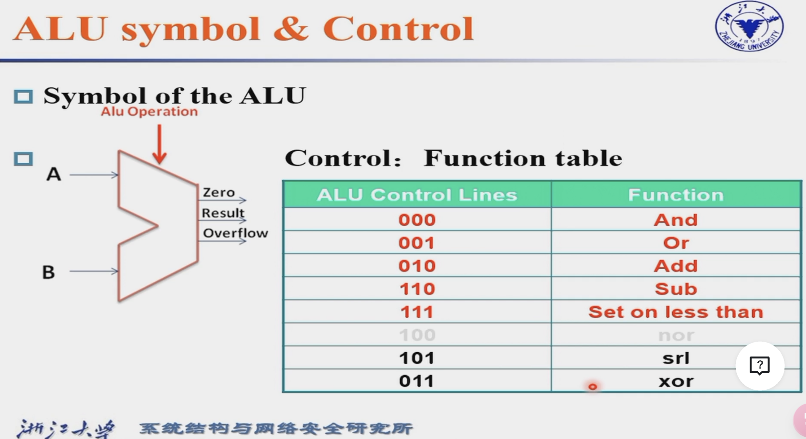
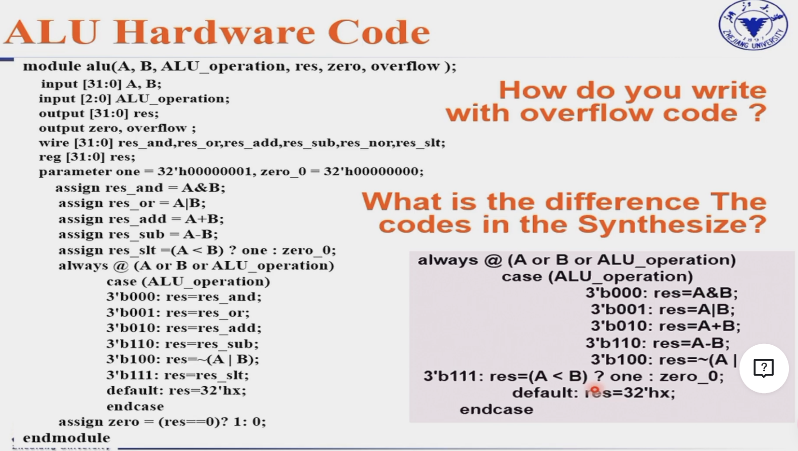
敏感列表里面要写等式右边的参数和条件判断里的参数
快速加法器¶
- carry select adder 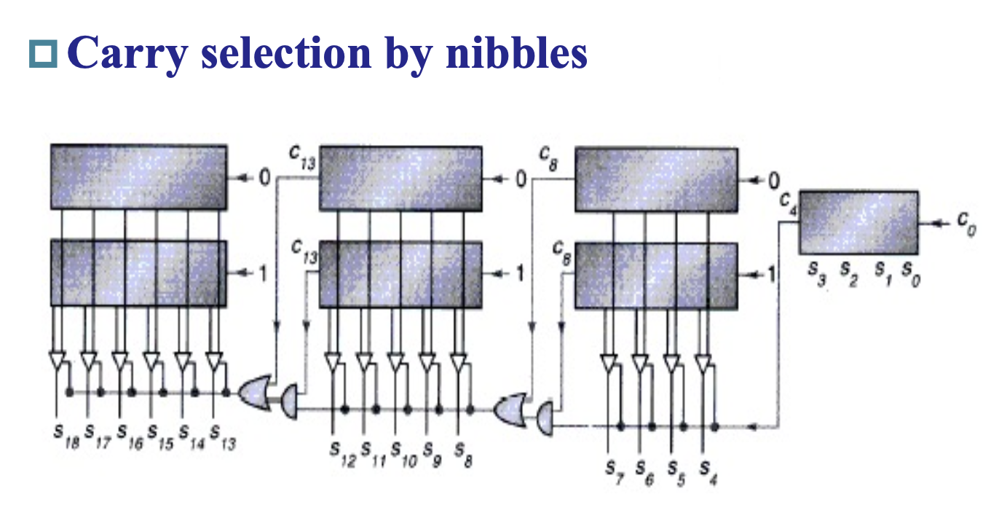 唯一的延迟是每一级之间的传递
乘法¶
- 用verilog实现左移
-
V1 很慢 不断的判断乘数的最后一位是否为1，然后移动或者相加。运算速度很慢，占用空间很大。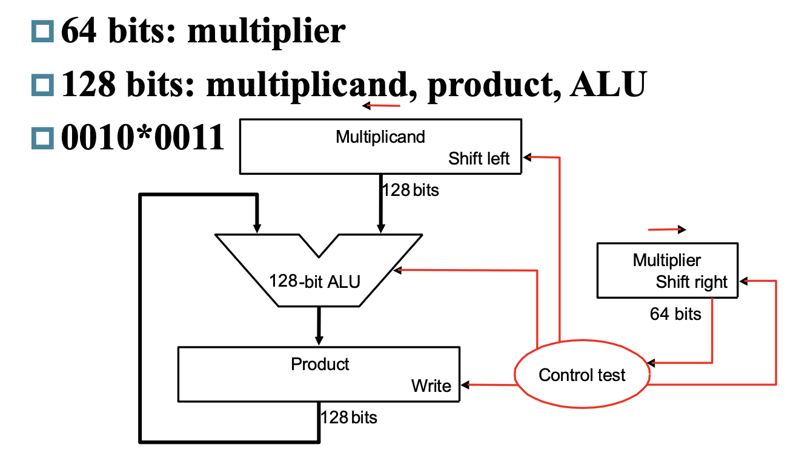
-
V2 不移动被乘数，把每次积的结果放在寄存器的高位，然后与之前暂存的运算结果相加，接着右移一位。 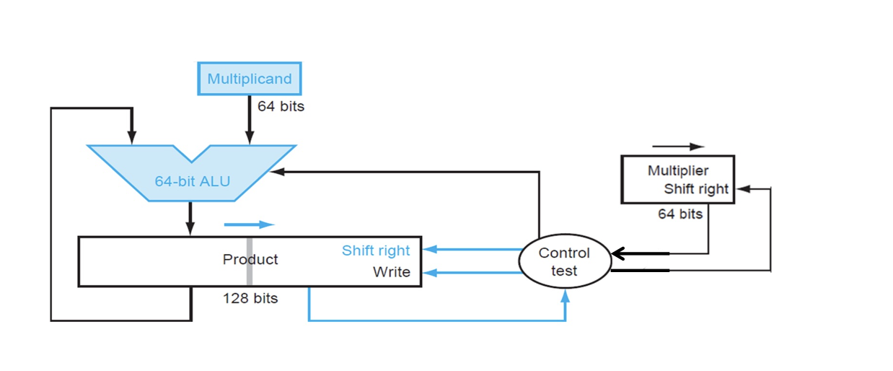
Product Result和Multiplier的移动方向是相通的。
- V3 把Multiplier放在结果寄存器的低位，节省更多的空间
有符号数的乘法¶
- 比较一下符号来确定结果的符号，记得要把负数（补码）变成正数
- 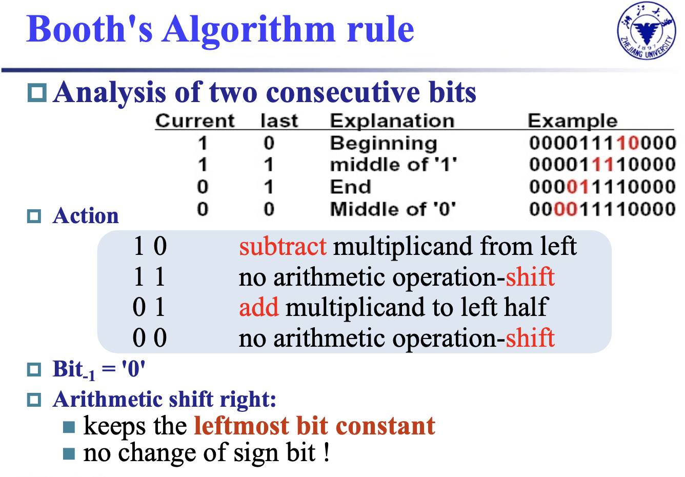快速乘法的一种算法，理念是把一个含连续1的乘数拆成2的幂的和。 只要注意右移的时候要signed extension。即如果是负数前面补1。而且每次运算时都要右移一次，00和11即不进行运算直接右移。
除法¶
- Divisor不断从左边右移，每次都从Remainder中减去一个Divisor，如果结果大于0，则把Quotient的最右端设成1，如果小于0则把Divisor加回去，Quotient最右端设为0。都要把Quotient左移一位。
- Divisor不动，移动Dividend（被除数），把Remainder和Quotient拼在一起，越早能被减去就意味着商的高位有‘1’。记住最后还要把左边的部分右移一位，因为在最后一次运算后还会把结果左移。（在运算前会有一个先移的操作，然后每次判断结果正负也会移动） 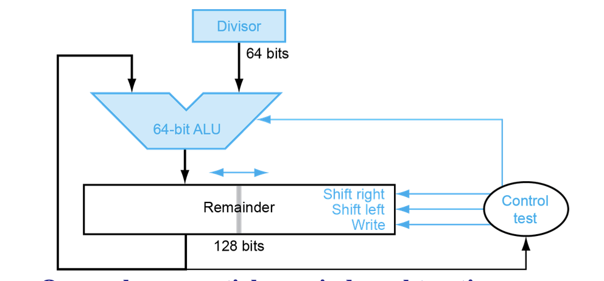
有符号的除法¶
余数（remainder）和被除数（dividend）的符号要保持。-7 / 3 余 -2， 7 / -3 余 1。
除0操作时会产生overflow，但是硬件不做处理，给定一个约定好的结果，需要软件自己处理。
浮点数运算¶
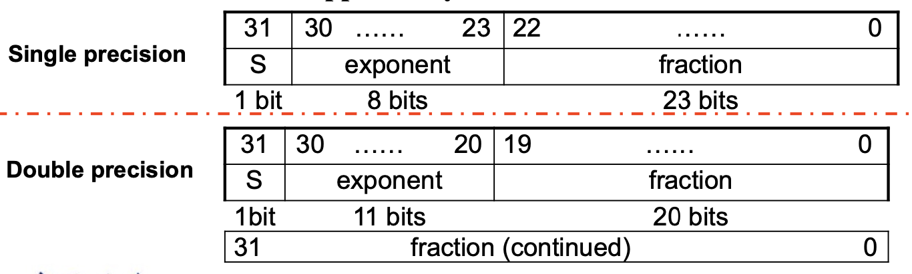
- fraction前的1会被省略
- 指数全为0预留给极小数。（Underflow）
- 指数全为1预留给极大数。（Overflow）
- 要注意位了可以表示负的指数，指数需要减去一个bias。单精度的bias是127，双精度的bias是1023。这样可以表示的范围就是-127～128（其中的-127和128不可能出现为实际指数）
\[
(-1)^{sign}\cdot (1+significand)\cdot 2^{exponent-bias}
\]
- 当指数全为1，且小数全为0时表示无穷大。denormalized意味着没有小数点前的1。 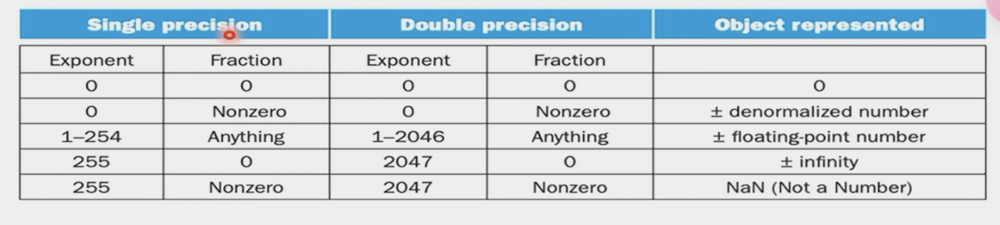
大部分硬件不支持浮点运算，但软件会把他拆分
加法¶
- 指数对齐：小的向大的靠齐，处理对齐后的数字有效位数，避免对大的进行位数处理。
- significands相加
- 结果归一化
- 检测是否overflow或者underflow
- 进位：进位的方法（截断或四舍五入或四舍六入）由计算机语言决定，进位后还要检测是否需要再归一化。
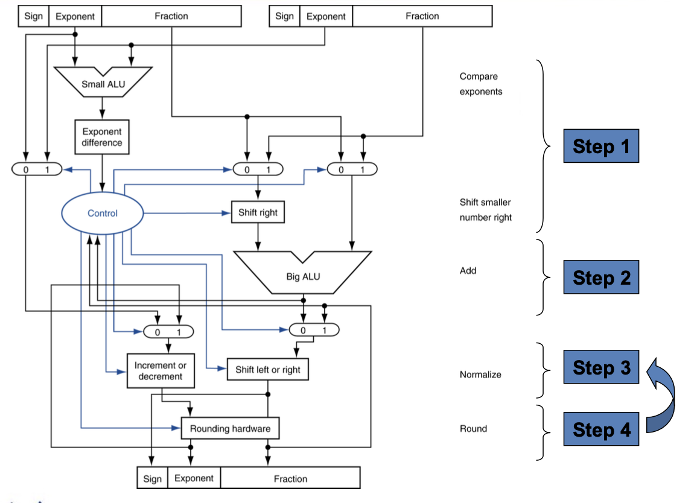
乘法¶
- 把指数部分相加，减去127。
- significant部分相乘
- 归一化结果 判断是否Overflow/Underflow 近似
- 符号位判断
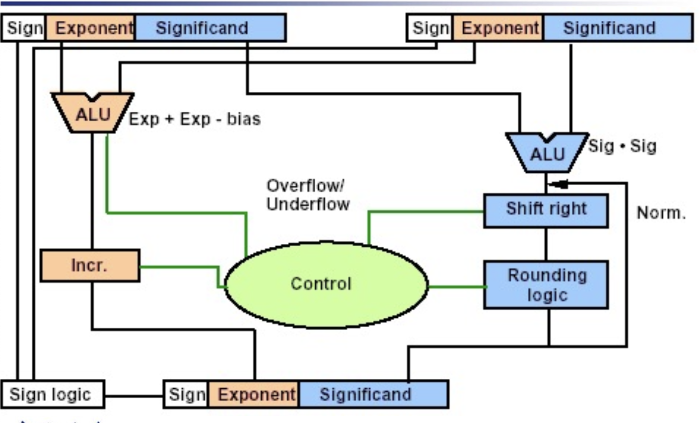
除法¶
和乘法类似，指数部分改为相减而已
提高精确度¶
- 允许Extra bits来保障精度（guard，round，sticky）最多多出来三位
guard
sticky只有当后面的数据全为0时为0，1时意味着后面的数据非0。
- units in the last place(ulp): 真实值和能被表示的数之间最小位的偏差。在有guard和round位的情况下不会超过0.5。
-
允许修约策略的选择
-
允许编程者微调计算的方式